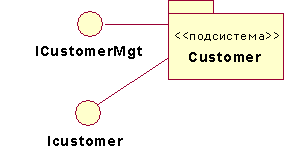
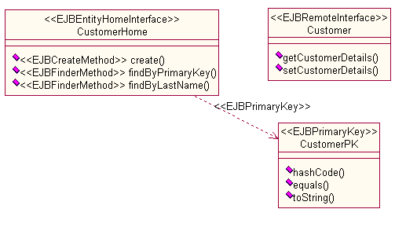
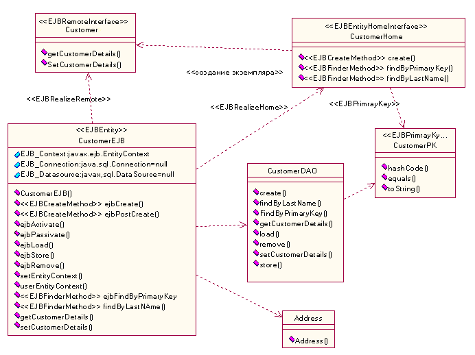

| Рекомендация: Проектирование подсистем для приложений J2EE |
 |
|
| Связанные элементы |
|---|
ВведениеЭти руководство дополняет Руководство: Подсистема проекта рекомендациями, относящимися к разработке приложений J2EE. Мы рекомендуем вам прочесть "Руководство: Подсистема проекта", прежде чем читать эти рекомендации, относящиеся к J2EE. Это руководство применяется к подсистемам проекта более высокого уровня дискретности, чем отдельные объекты EJB. Дополнительная информация об объектах EJBs приведена в разделе Рекомендация: Объект EJB (Enterprise JavaBean). Заметьте также, что Клиент приложения считается специализированной Подсистемой проекта. См. раздел Руководство: Клиент приложения J2EE. Разработка подсистем проектаПри первой идентификации подсистемы она может быть изначально технологически нейтральной. То есть, она может быть задана с помощью интерфейсов, текстовых описаний и некоторых конечных автоматов, которые описывают ожидаемое поведение операций. Однако, такие технологически нейтральные подсистемы обычно развиваются в специализированные технологические представления. Ниже приведен пример того, как технологически нейтральная подсистема проекта развивается в специализированную технологическую подсистему. Спецификация подсистемы (представление подсистемы в виде черного ящика)Спецификация подсистемы может первоначально моделироваться с помощью абстрактных интерфейсов UML. Рассмотрим предварительный проект подсистемы Клиент, показанный на Рисунке 1.  Рисунок 1: Предварительный проект - Подсистема Клиент Для ICustomerMgt определяются операции, такие как "getCustomerDetails" и "setCustomerDetails". По мере того как проект становится более подробным (Задача: subsystem_design_real-time_design), эти абстрактные интерфейсы заменяются элементами, характерными для языка или технологии. (Можно поддерживать более абстрактную модель подсистемы, например, если есть потребность реализовать одинаковый проект на нескольких языках или технологиях. Эти опции обсуждаются в разделе Концепция: Преобразование из Проекта в Код.) Соответствующий проект Рабочий продукт: Реализация прецедентов изменяется таким образом, чтобы соответствовать изменениям интерфейса. В этом примере, Рисунок 2 - это черный ящик или представление спецификации подсистемы Клиент. Последующий проект указывает на то, что подсистема Клиент должна быть EJB сущности. Подсистема предварительного проекта преобразуется в интерфейсы EJB, как показано ниже:
 Рисунок 2: Представление черного ящика Подсистемы проекта Клиент Открытые Подсистемами проекта интерфейсы могут включать в себя стандартные интерфейсы Java, интерфейсы EJB (такие как интерфейсы Java), интерфейсы EJB (удаленные и домашние) и даже один или несколько классов делегирования или доступа, которые полностью скрывают существование одного или нескольких объектов EJB. Заметьте, что все они, включая интерфейсы Java, моделируются как классы UML, а не интерфейсы UML (Руководство: Интерфейсы для приложений J2EE). Например, bean-объект сеанса часто используется как фасадный метод для доступа к набору тесно связанных bean-объектов сущности. В этом случае, только интерфейсы bean-объекта сеанса будут открыты в подсистеме. Bean-объекты, управляемые сообщениями, асинхронно используют сообщения из назначения (или конечной точки). Поэтому, назначение может также служить "интерфейсом" для Подсистемы проекта, содержащей bean-объекты, управляемые сообщениями. Заметьте, что локальные интерфейсы используются другими тесно связанными объектами EJB в той же Подсистеме проекта, и они появляются в реализации подсистем более часто, чем в видимых интерфейсах, открытых системой. Более подробная информация о интерфейсах в приложении J2EE находится в разделе Руководство: Интерфейсы для приложений J2EE. Дополнительная информация о моделировании объектов EJB приведена в разделе Руководство: Объект EJB (Enterprise JavaBean). Реализация подсистемы (представление подсистемы в виде белого ящика)Подсистемы проекта должны открывать только то, что требуется клиентам. Поэтому, класс, который реализует объект EJB, является частным для подсистемы и является логической частью подсистемы реализации. Подсистема реализации может стать:
Продолжая предыдущий пример подсистемы Клиент, ее реализация включает в себя:
На Рисунке 3 показано представление белого ящика (то есть, внутренняя часть) Подсистемы проекта. Заметьте, что классы EJB смоделированы, как это описано в Руководство: Объект EJB . Это внутреннее представление подсистемы называется реализацией подсистемы. В этом представлении мы видим решения, невидимые для клиента. Например, в этой реализации подсистемы класс Объекта доступа к данным (DAO) получает доступ к постоянным данным с помощью API JDBC. (В другом проекте может использоваться хранилище, управляемое контейнером.) Более подробная информация о классах DAO находится в разделе Рекомендация: EJB.  Рисунок 3: Представление белого ящика Подсистемы проекта Клиент |
© Copyright IBM Corp. 1987, 2006. Все права защищены.. |